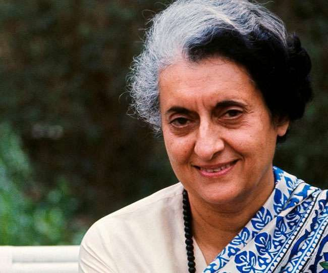

Gandhi's biggest achievement following the 1971 election came in December 1971 with India's decisive victory over Pakistan in the Indo-Pakistani War that occurred in the last two weeks of the Bangladesh Liberation War, which led to the formation of independent Bangladesh.
Here's the time line of Indira Ghandhi Life:
1917"- Born in Allahabad, Uttar Pradesh"
1934"- Indira was taught mostly at home by tutors and attended school intermittently until matriculation"
1937"- she attended the Badminton School for a brief period before enrolling at Somerville College to study history"
1967-71"- First Prime Minister of India"
1971-77"-Garibi Hatao (Eradicate Poverty) was the resonant theme for Gandhi's 1971 political bid."
1967"- One of the major developments in Southeast Asia during Gandhi's premiership was the formation of the Association of Southeast Asian Nations (ASEAN) in 1967."
"The United States of America was a key ally of India; President Kennedy was vocally supportive of Indian leaders and their policies. The death of Kennedy saw a steady decline in Indo-US relations, particularly when President Nixon came to power in 1969."
-- Indian Prime Minister Manmohan Singh
If you have time, you should read more about this incredible human being
on his
Wikipedia entry